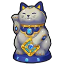

Felino da Fortuna
Ídolo · Tier 16 · Nível 47
A fortuna de um gato aguarda seu dono, mas suas bênçãos são.. caprichosas, na melhor das hipóteses.
Atributos
Defesa
634
Vida
105
Economia
Valor
37.800.000
Tempo de fabricação
5d 9h
XP do comerciante
520.000
Trabalhadores: Elemental da Tempestade 39, Ferreiro 35, Mestre 32
Receita


Marcos do projeto
3
Tempo de fabricação -20%
8
-36 Aço
14
Valor +25%
20
-100 Ferro
30
Chance de qualidade +1